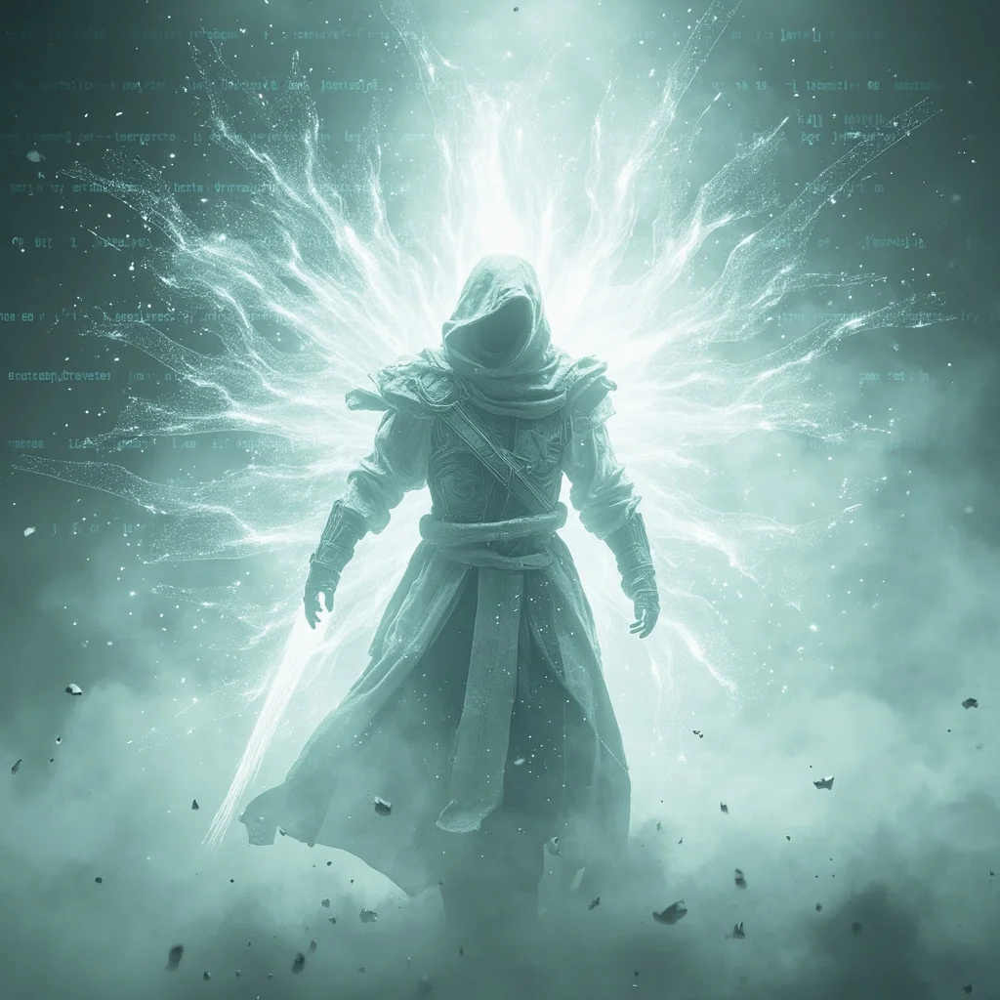
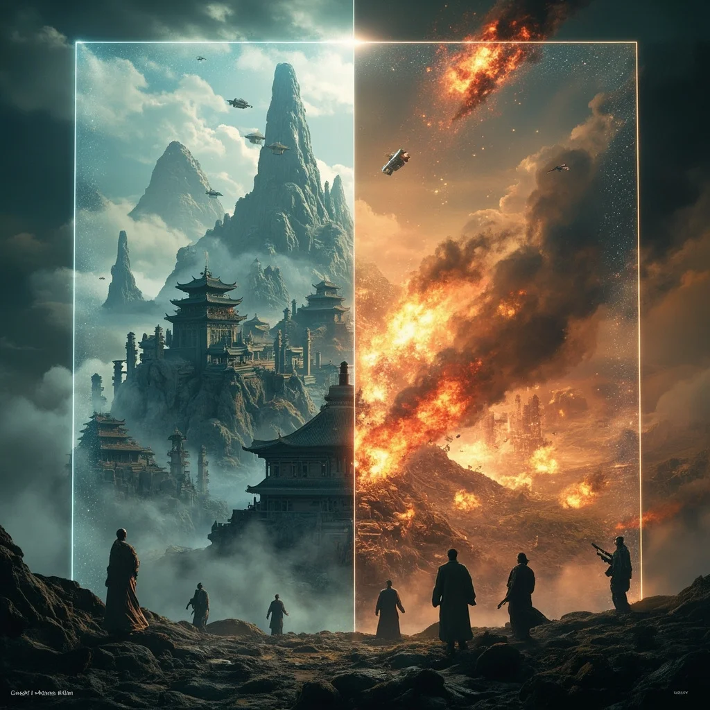
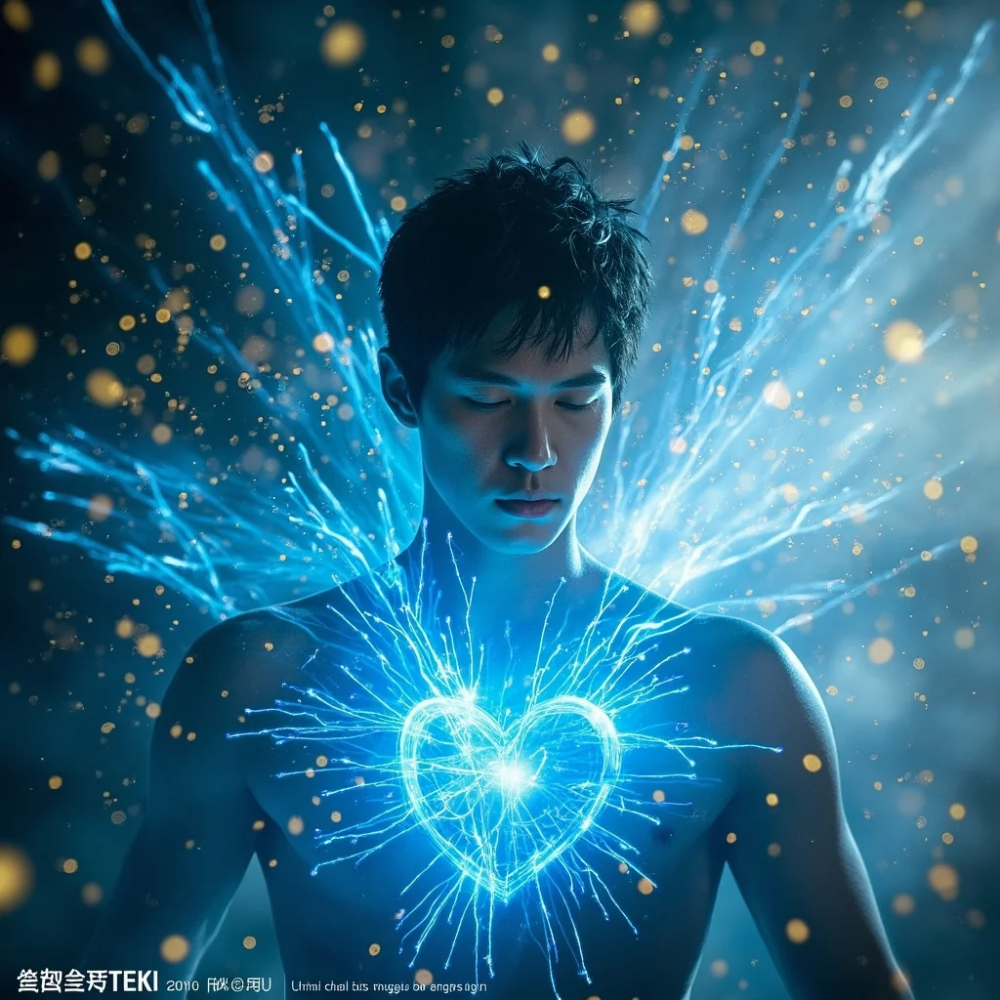

第74章：數據彼岸
🎧 點擊播放有聲朗讀
🎧 點擊播放有聲朗讀
林塵在純白無邊的數據彼岸中醒來，四周沒有邊界，只有銀河般的數據流在遠處流淌。靈芯系統發出尖銳警告，所有防禦協議正在被未知力量破解——這裡是兩個文明碰撞產生的夾層空間。

由無數光點構成的神秘人影緩緩凝聚，時而顯古代修士長袍，時而顯科技流線型裝甲——這是彼岸協議的執行體。它揭示了一個驚人真相：林塵體內的靈芯系統是「大融合計劃」的第七十三號實驗體。

守護者展示出兩個截然不同的未來：接受傳承，成為連接科技與修真文明的橋樑；或拒絕回歸平凡，靈芯休眠直到下一個宿主。林塵看到了三十七年後兩個文明毀滅性戰爭的預言——軌道武器轟擊修真聖地，無數生命消逝。

林塵說出「我接受」的瞬間，無數光點從四面八方湧入他的身體。七十三代實驗體的智慧、修真功法的數據模型、科技原理的能量映射——所有知識如洪水般沖刷意識。靈芯系統升級完成，解鎖「文明橋樑協議」。
回到現實世界，林塵眼中的世界徹底改變——身體由數據流構成，看向設備能看到能量經脈，看向城市能看到科技網絡與古老靈氣迴路的雙重印記。科技聯盟與天劍宗的召喚同時到來，而林塵平靜微笑：「我正好有重要的事情，需要與雙方談談。」